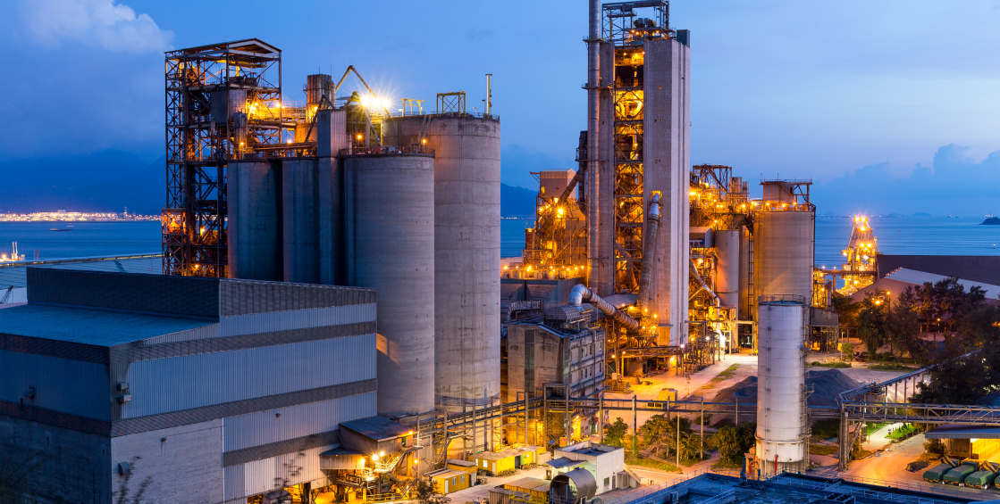

The company's managers will be happy to answer your questions, calculate the cost of services and prepare a commercial offer.
order a projectShipping robots for the Robot Ball exhibition
The exhibits for this event in Moscow were brought all the way down from the USA, Canada, France, UK, Germany, Switzerland, Slovenia, Russia, Korea, Japan, Singapore, and New Zealand.
ABIPA handled the delivery of two robots from Korea.
The order was placed by the producer’s transport agent several days before the exhibition.
Due to tight time limits of this express delivery, the order had already been declined by a number of shipping companies. ABIPA managed to complete the task and deliver the high-value robots on time.
The delivery of Kibo and Cilbot robots with auxiliary equipment by air from Korea to Moscow was provided along with ATA Carnet customs registration.
- The delivery of Kibo and
- The delivery of Kibo and The delivery of Kibo and The delivery of Kibo and The delivery of Kibo and
- The delivery of Kibo and
- The delivery of Kibo and
Need advice?